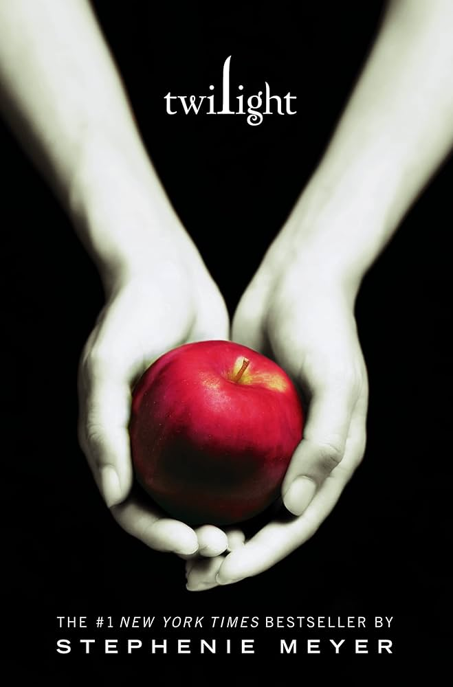

We just got back from a concert trip to Kansas City, and wow—the city was beautiful and the airport was one of the nicest I’ve ever seen. Since we packed everything into a two-day weekend, we didn’t have much time for sightseeing. We flew in early Saturday morning, went straight to the concert check-in, grabbed BBQ at a nearby spot, and spent the evening at the show before checking into our hotel. The next morning we hit another famous BBQ place, then wrapped up the trip exploring the airport’s little shops and restaurants before flying home.
I can't pick favorites so here are my pets. We chose Asian inspired names and kept their adopted names as middle names:
My favorite restaurant right now is Mellow Mushroom because their menu changes seasonally, they have a large drink menu, and many options for entrees depending on how you’re feeling.
My favorite food is Tripas Tacos (tripe). Tripe is a staple in my favorite dishes growing up Vietnamese American, and I also love Mexican culture. I usually eat them with just onions and cilantro absolutely drowned in lime — and nothing else!
| Book | Cover | Author | Summary |
|---|---|---|---|
| Villains Are Destined to Die | |
Gwon Gyeoeul | A comic series where the main character is trapped in a dangerous game world as the villainess. |
| Milk and Honey | |
Rupi Kaur | A collection of poetry about survival, love, loss, and femininity. |
| Twilight |  | Stephenie Meyer | A teenage girl falls in love with a mysterious vampire, leading to romance and danger. |
| You | |
Caroline Kepnes | A chilling story about obsession, love, and the dark side of desire. |